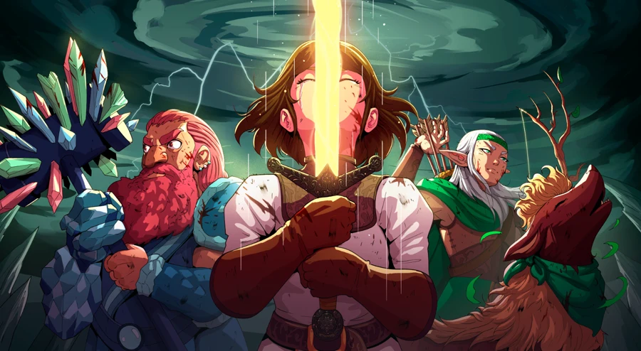
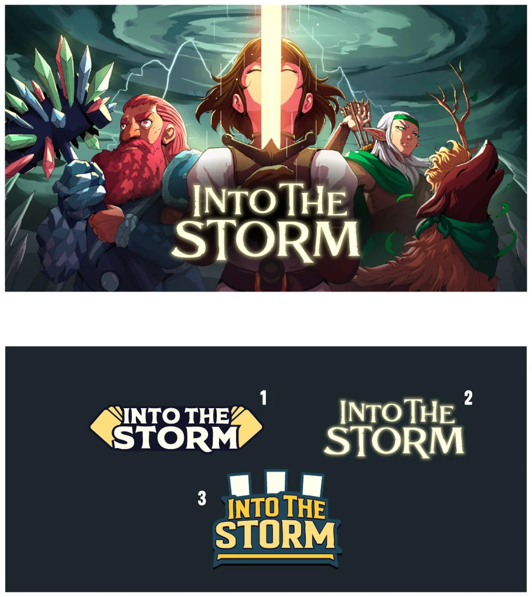

Capsule cover & logo, illustrated by Alejandro Giraldo


[Vision] A line or two on coming in with a point of view before Alejandro ever sketched anything — the "Proposed Direction" call (combine capsule C with capsule B's characters, drop "Aurillia," center the title) is the evidence for this.
“Capsule C + the other characters from Capsule B flanking her… Still keeping Zarah as the focal point and the other two as secondary focus.” — from the Proposed Direction brief
[Collaboration] A line or two on how notes were given — specific, each anchored to a reference image, opening positive rather than generic.
“This one is awesome! Definitely my favorite.” / “You have done such an amazing job bringing this to life, thank you so much!!” — feedback deck pull-quotes, pick final wording
-

01Artist brief — mood-board references for tone and genre
-

02My own pencil sketch, sent alongside the brief
-

03Three composition options from Alejandro
-
04Chosen direction, expanded to the full party
-

05First color pass
-

06Three logo lockup options
Built with AI-assisted development. Currently in alpha; a wider release is planned.